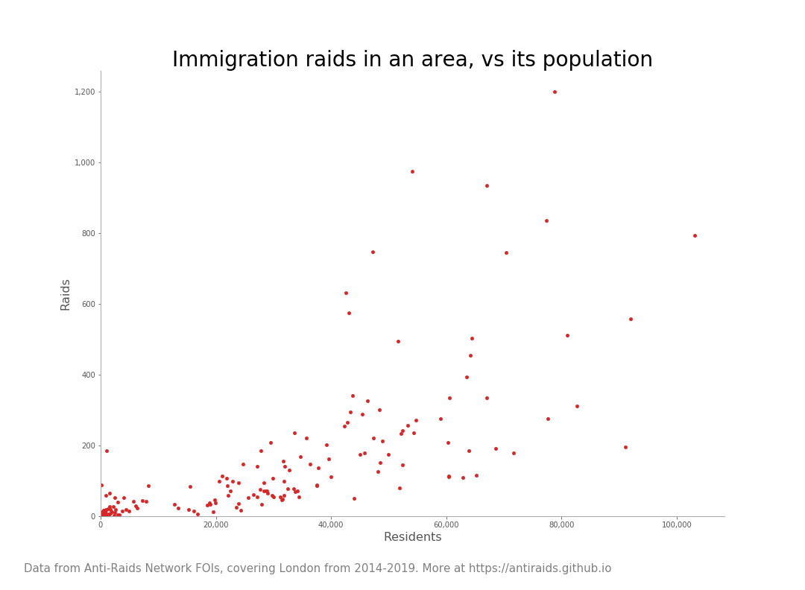
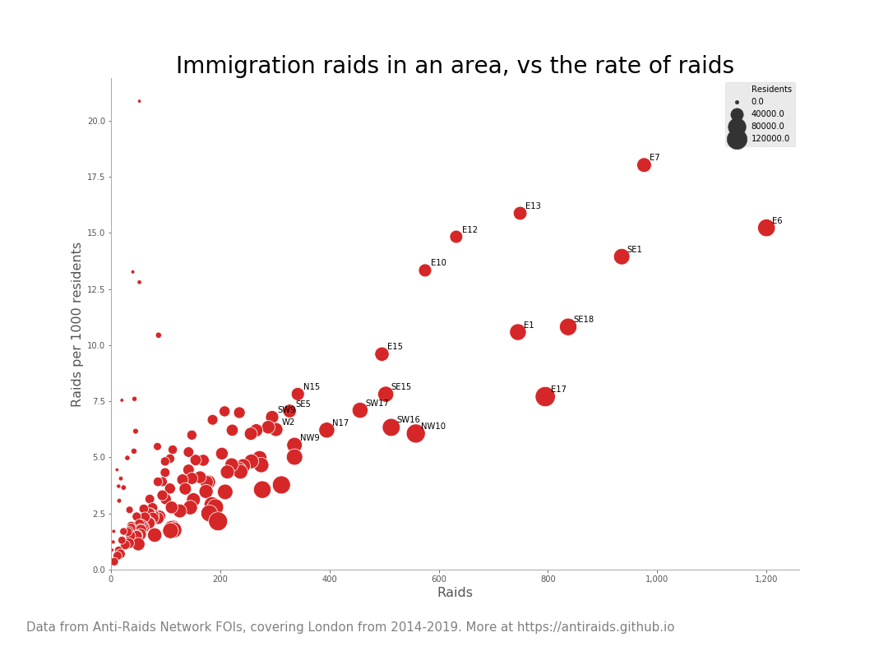
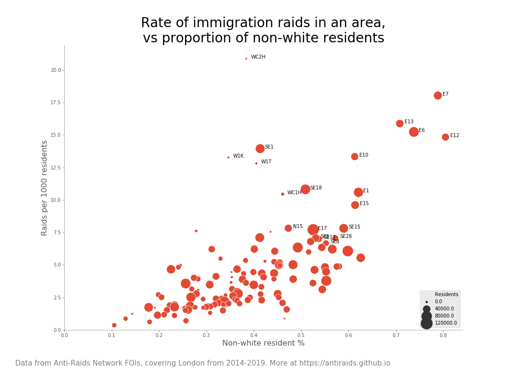
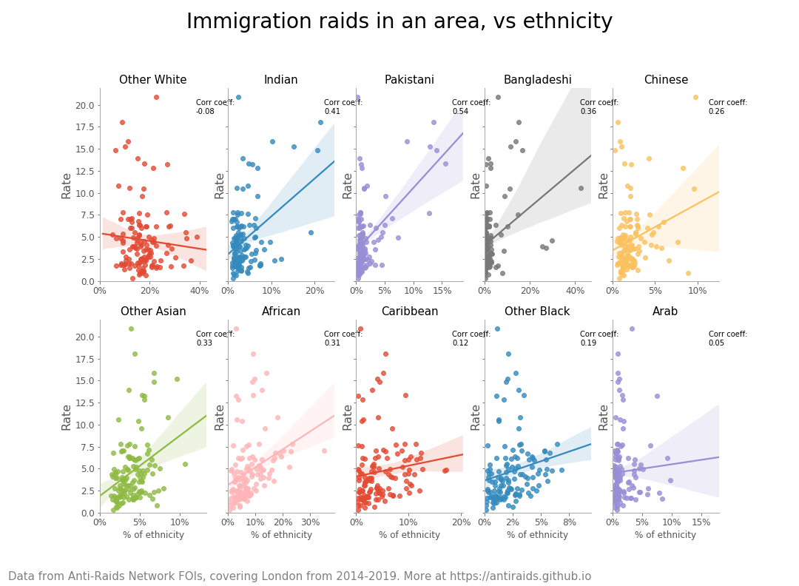
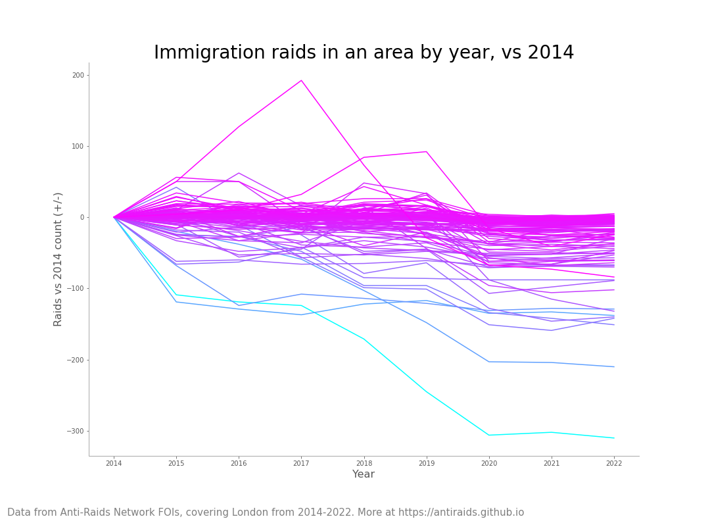

Where immigration raids happen in London
A deep dive into our FOI data
The data
Researchers from the Anti-Raids Network have uncovered data on where immigration raids happen in London. This data gives counts of immigration raids, broken down by:
- year
- the first bit of the postcode – e.g. N15, E6 – which we call postcode area
Below, we outline: where the hotspots are, how things have changed over the last few years, dig into the local detail, then suggest some next steps.
Where do lots of raids happen?
There is no single huge outlier area, with loads more raids happening there than elsewhere. In general, the more people living in an area, the more raids there are:

As a network of anti-raids groups, we want to know areas where there are both a high number of raids, and a high rate of raids -- as they could be prime areas for new anti-raids organising.
Looking from this angle, in the top 20 there are areas covered by existing anti-raids groups — e.g. N15 and N17 by Haringey Anti-Raids, E15 by Newham Anti-Raids — but also lots of areas without known organisations working against raids.

🠗 Jump to map
Why are there more immigration raids in some places than others?
Given how immigration enforcement officers love their racial profiling, we looked into whether there was any link between where immigration raids happen and where communities of colour live. And sure enough, the more residents of colour in an area, the more it was targeted by immigration enforcement.

Not all migrant communities are harassed by ICE equally. In other reports, for example we see Indian and Pakistani migrants making up a high proportion of people deported, vs a relatively low rate of people from the Middle East. And that seems to be broadly in line with our immigration raids data:

How many racialised migrants an area has is just one reason why raids might vary from one area to another. There are likely lots of other factors at play too. If you want, you can grab the FOI data itself from our Github and play around to see any other links.
🠗 Jump to map
Have raids gone up or down in the last few years?
There isn't a simple narrative like "raids have fallen over the last few years". Some areas went up, some went down, some were all over the shop.

More went down than up since 2014, but it's a bit of a mess.
🠗 Jump to map
Digging down to your area
To make the data a bit easier to plough through, we have broken it down into line graphs for each section of inner London:
Use the legend in the sidebar to highlight postcode areas. Use the controls at the bottom to zoom in, scroll around, and reset.
🠗 Jump to map
Raids across London
Use the search bar on the left to zoom in on a postcode area (e.g. E9). Use the selector on the right to toggle between the absolute count of raids, and the relative rate of raids per 1000 residents.
So, what next?
We think that immigration raids are best resisted at the local level. You can use this data to find out what's happening in your area.
- Is it the local immigration raid hotspot in the area you live, or is it a few minutes walk away?
- Do you know of any shops in the hotspot that might be targeted by immigration enforcement? Could you print off some flyers from the Anti-Raids Network website and drop them over, so they know their rights?
- Are you disgusted at the amount of immigration raids that happen in your area? If so, you should join an anti-raids group!
Local anti-raids groups
We have active local groups in Haringey, Newham, a new group in south west London and a dormant group in Deptford (as well as groups across the UK in Edinburgh, Sheffield, Brighton, Bristol, and Leeds)
If there's not an anti-raids group in your area, then:
Good luck in the struggle!
Glossary
FOI: "Freedom of Information", shorthand for requests made to public bodies for information under the Freedom Of Information Act.
ICE: "Immigration Compliance and Enforcement", shorthand for the core government department responsible for enforcing "immigration" law.
Immigration raid: the name for when the government goes into a local area, with the intention to detain people under "immigration enforcement" powers, for harassment and deportation. Sometimes just called "raids" for brevity.
Postcode area: the shorthand we use here for the first half of a UK postcode (e.g. N15, E6). Technically, the "postcode area" is the first bit of the first half (1-2 letters e.g. SE1 7EU, SW1P 4DF), the "postcode district" is the second bit of the first half (e.g. SE1 7EU, SW1P 4DF), and the postcode area and postcode district together are called the "outward code" — but that felt a bit too technical a term to use.
FOI request template
FOI requests sound complicated, but it's just a fancy way of saying "email the government and ask for something". Here is an example:
To whom it may concern,
I am writing to you under the Freedom of Information Act, to request information held by you.
I request an update to a previous FOI:
- the number of immigration raids/visits conducted in each east London postcode (E1-20; EC1-4) for the years 2014-2020
- the number of raids/visits for each year to be separately listed
- for the data to be split by postcode district (e.g. E8)
I would like this information in digital spreadsheet format. I suggest the format of: a row per postcode district; a column per year (e.g. one column for raids/visits in 2014, one column for raids/visits in 2015; etc.)
Please do not hesitate to get in touch if I can clarify any of the above. I look forward to hearing from you within 20 working days.
Kind regards,
Joe Bloggs
Just make sure to change the postcodes you're asking for, and your name! The Home Office's FOI email address can be found on the Gov.UK website; and you can find a guide to making FOI requests at WhatDoTheyKnow.com.